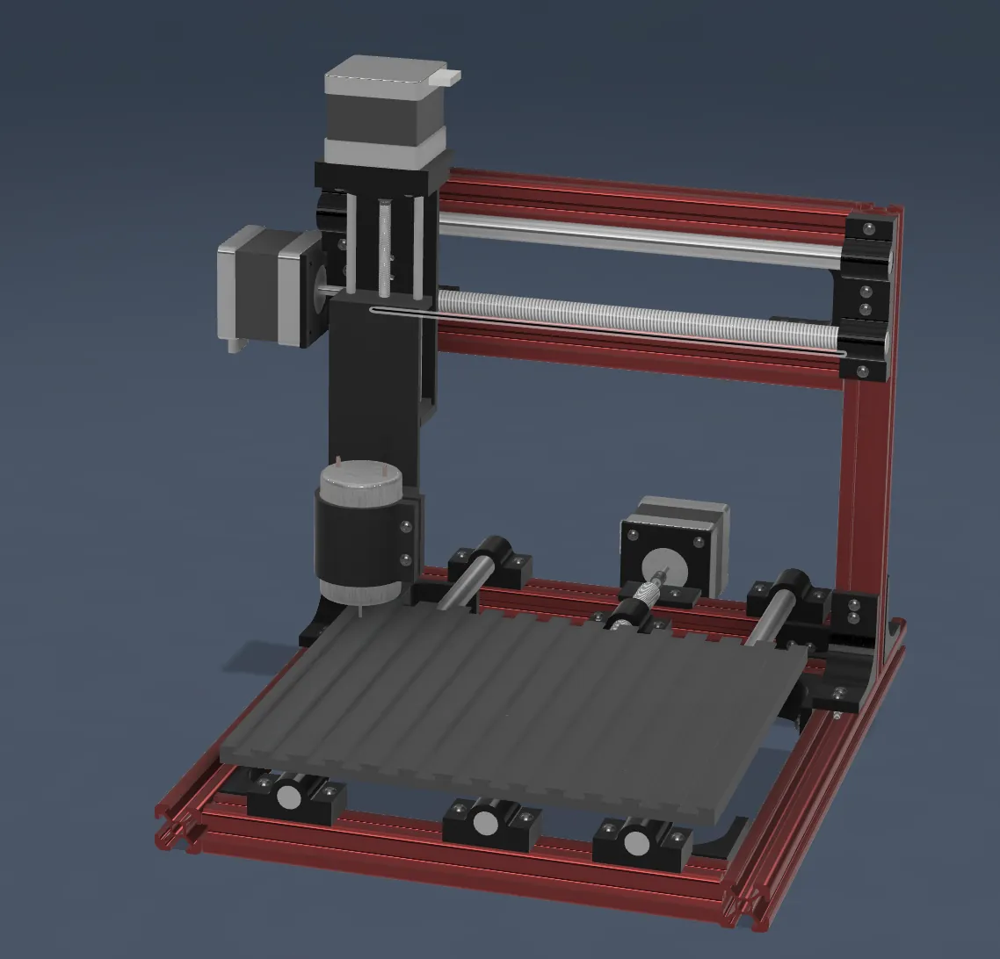
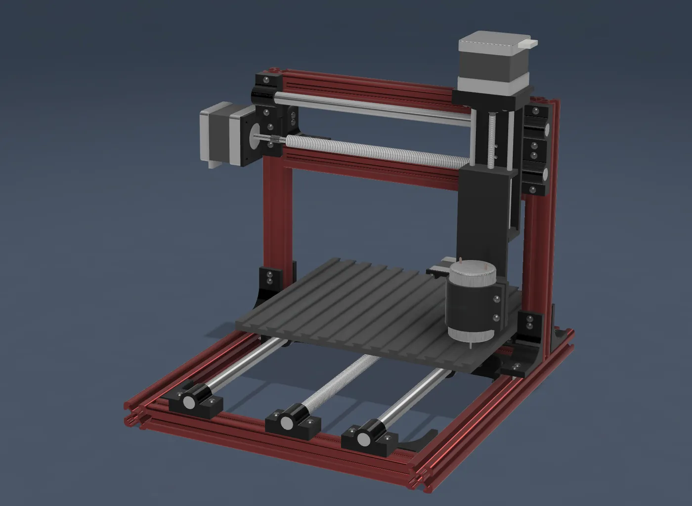
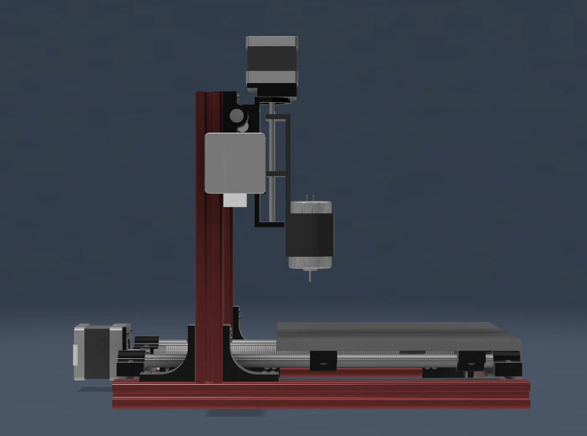
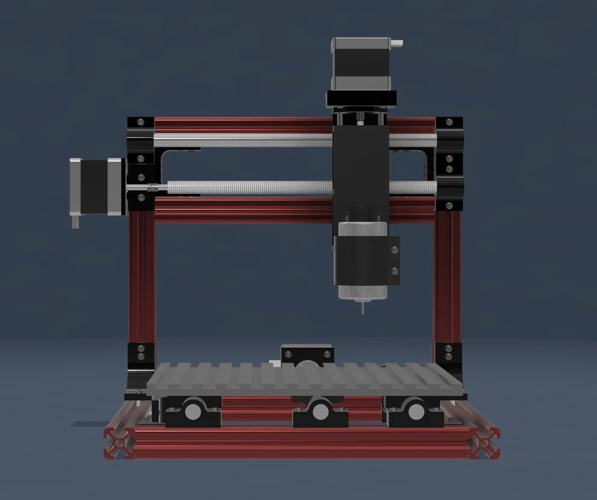
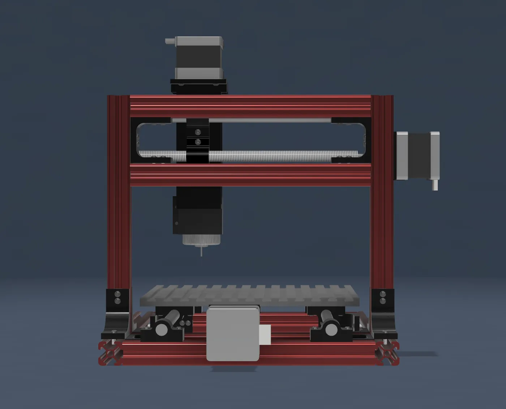
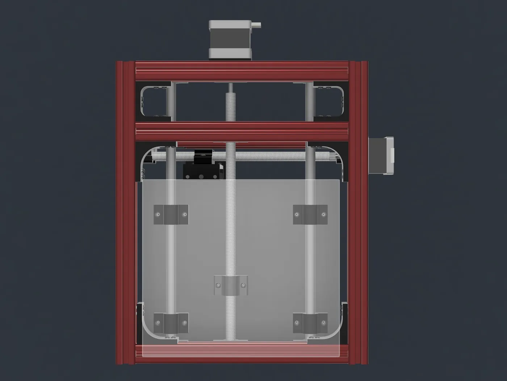
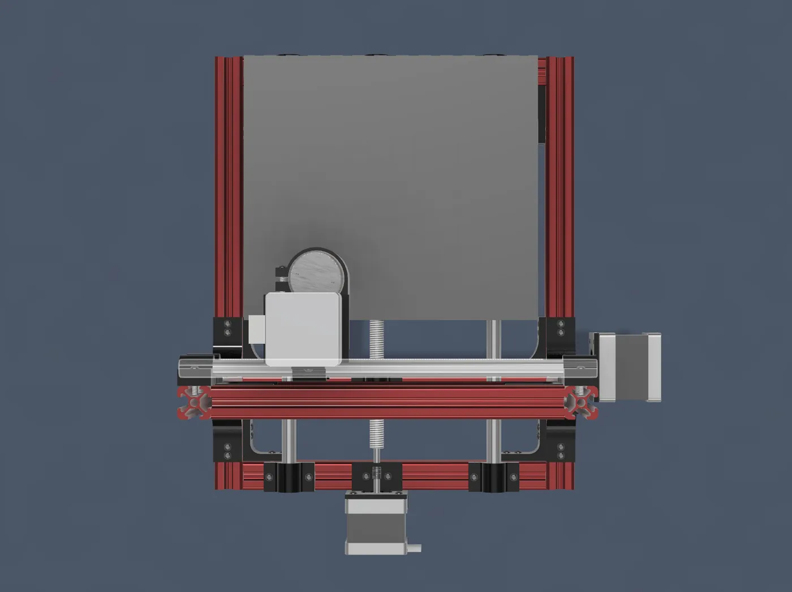
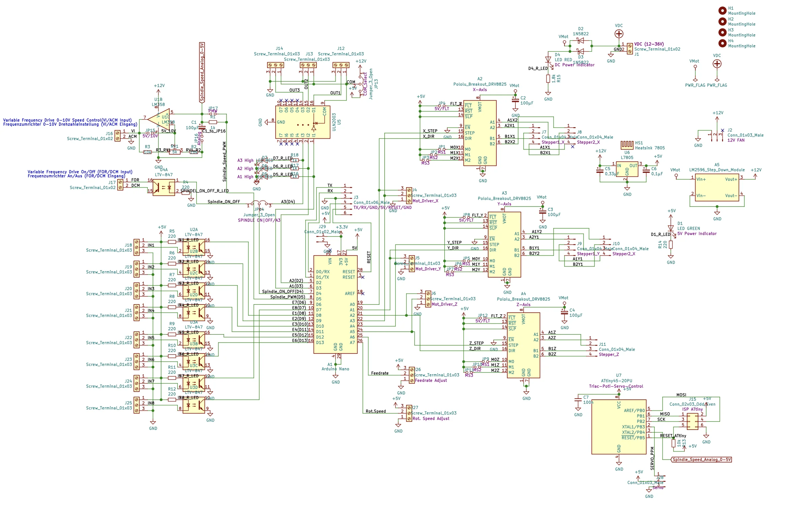
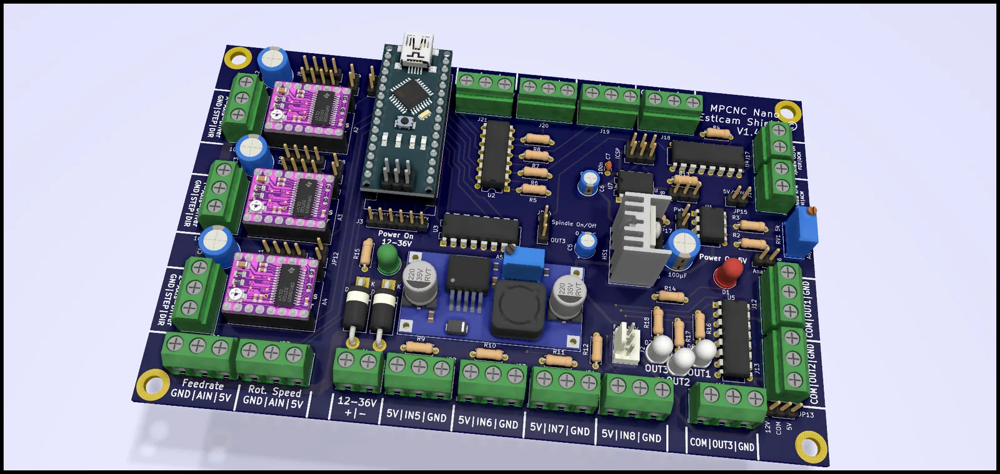

Project 06 · 2024
3-Axis CNC Mill
A desktop CNC mill designed from scratch: mechanics, control board and software.
06.1Summary
A fully custom 3-axis CNC mill able to machine materials such as aluminium and PVC. The X, Y and Z axes are driven by stepper motors; the mechanical structure, control board and software are all part of the project.

06.2Block diagram
06.3Specifications
| Travel | X 200 mm · Y 150 mm · Z 200 mm |
|---|---|
| Axis drive | 3 × stepper motor, modular stepper drivers |
| Spindle | 500 W DC motor |
| Controller | Arduino Nano (ATmega328P) |
| Supply | 12–36 V input |
| Regulation | LM2596 → 12 V (motors) · LM7805 → 5 V (logic) |
| Firmware | GRBL |
| Materials | Aluminium, PVC |
06.4Mechanical design
The frame is built from aluminium extrusions; steel lead screws are used on the axes for durability.














06.5Electronic design
The control board uses an Arduino Nano module: it is easy to replace, cheap and simple to program. The board drives three steppers through three modular drivers. From the 12–36 V input, an LM2596 produces a stable, low-noise 12 V for the motors and an LM7805 produces 5 V for the microcontroller.
The board has 5 status LEDs: green for the 12–36 V input, red for the 5 V rail, and three white LEDs showing signal activity on the X, Y and Z motor outputs (OUT1–OUT3).




06.6Software
The machine runs GRBL firmware, which handles G-code interpretation and motion planning. Development was done in the Arduino IDE.